State adalah data yang dapat berubah selama aplikasi berjalan dan memengaruhi tampilan antarmuka, sesuai prinsip UI = f(state). Pada Flutter, state dibedakan menjadi dua jenis. State lokal (ephemeral state) hanya dibutuhkan oleh satu widget dan dikelola menggunakan StatefulWidget dengan fungsi setState(). Sebaliknya, app state dibutuhkan oleh banyak widget dan halaman sekaligus, sehingga perlu disimpan di tempat yang dapat diakses bersama, salah satunya menggunakan package provider yang memanfaatkan class ChangeNotifier dan method notifyListeners().
Pada praktikum ini dibangun aplikasi ResepKu, yaitu aplikasi daftar resep masakan. Fitur jumlah porsi pada halaman detail dibuat dengan setState() karena hanya dibutuhkan oleh satu halaman. Fitur favorit kemudian dicoba terlebih dahulu dengan state lokal untuk melihat keterbatasannya, lalu diperbaiki menggunakan Provider karena data favorit dibutuhkan oleh daftar resep, badge di AppBar, halaman detail, dan halaman Favorit. Pembacaan state dilakukan dengan context.watch, context.read, dan Consumer. Project ResepKu ini akan terus dikembangkan pada modul-modul berikutnya.
StatefulWidget dan setState() pada fitur jumlah porsi di halaman detail.provider (ChangeNotifier dan MultiProvider) pada fitur favorit.context.watch, context.read, dan Consumer di beberapa halaman.Project dibuat dengan perintah flutter create resepku yang membuat kerangka aplikasi Flutter baru, lalu cd resepku untuk masuk ke foldernya. Pada folder lib/ dibuat lima folder untuk memisahkan tanggung jawab kode, yaitu models, data, providers, pages, dan widgets. File test/widget_test.dart bawaan template dihapus karena merujuk class MyApp yang sudah tidak ada dan modul ini belum menggunakan testing.
Class Recipe merepresentasikan satu resep dan berisi field id, name, cuisine, difficulty, waktu persiapan dan memasak, jumlah porsi, kalori per porsi, rating, image, dan daftar ingredients. Seluruh field bertipe final dan constructor-nya const dengan required agar objek resep tidak dapat diubah dan semua data wajib diisi. Getter totalTimeMinutes menghitung total waktu memasak (prepTimeMinutes + cookTimeMinutes) dan dipanggil tanpa tanda kurung seperti field biasa.
class Recipe {
final int id;
final String name;
final String cuisine;
final String difficulty;
final int prepTimeMinutes;
final int cookTimeMinutes;
final int servings;
final int caloriesPerServing;
final double rating;
final String image; // dipakai mulai Modul 7
final List<String> ingredients;
const Recipe({
required this.id,
required this.name,
required this.cuisine,
required this.difficulty,
required this.prepTimeMinutes,
required this.cookTimeMinutes,
required this.servings,
required this.caloriesPerServing,
required this.rating,
required this.image,
required this.ingredients,
});
int get totalTimeMinutes => prepTimeMinutes + cookTimeMinutes;
}Data enam resep pertama dari dummyjson.com/recipes disimpan sebagai const List<Recipe> dummyRecipes pada file lib/data/dummy_recipes.dart. Pada modul berikutnya data yang sama akan diambil langsung dari API sehingga tampilan tidak perlu diubah.
Widget IdentityFooter menampilkan NIM dan nama pada bagian bawah setiap halaman. Footer dipasang melalui parameter builder pada MaterialApp, yang membungkus Navigator sehingga footer otomatis tampil di semua halaman tanpa perlu ditambahkan pada setiap Scaffold. MediaQuery.removePadding(removeBottom: true) digunakan agar ruang aman bawah tidak dihitung dua kali, karena sudah diurus oleh SafeArea pada footer.
const String kNim = '2411531008';
const String kNama = 'Muhammad Fazil Afif';
class IdentityFooter extends StatelessWidget {
const IdentityFooter({super.key, required this.child});
final Widget child;
@override
Widget build(BuildContext context) {
return Column(
children: [
Expanded(
child: MediaQuery.removePadding(
context: context,
removeBottom: true,
child: child,
),
),
Material(
color: Colors.black87,
child: SafeArea(
top: false,
child: SizedBox(
width: double.infinity,
child: Padding(
padding: const EdgeInsets.symmetric(vertical: 6),
child: Text(
'$kNim • $kNama',
textAlign: TextAlign.center,
style: const TextStyle(color: Colors.white, fontSize: 12),
),
),
),
),
),
],
);
}
}HomePage berupa StatelessWidget yang menampilkan ListView berisi RecipeTile untuk setiap data pada dummyRecipes menggunakan perulangan for di dalam list. RecipeTile menampilkan ListTile dengan avatar huruf pertama nama resep, judul, dan subtitle berisi jenis masakan, total waktu, serta rating. Properti onTap memanggil Navigator.push menuju DetailPage dengan mengirim objek recipe melalui constructor.
DetailPage dibuat sebagai StatefulWidget karena jumlah porsi berubah ketika tombol plus atau minus ditekan. Terdapat tiga hal penting pada class state-nya. Pertama, nilai awal _servings diisi di initState() dari widget.recipe.servings; variabel dideklarasikan late int karena baru diisi setelah objek dibuat. Kedua, data milik widget diakses melalui widget.recipe. Ketiga, setiap perubahan nilai dibungkus dengan setState() agar Flutter menjalankan ulang build() dan tampilan diperbarui.
class _DetailPageState extends State<DetailPage> {
late int _servings; // state lokal: hanya halaman ini yang butuh
@override
void initState() {
super.initState();
_servings = widget.recipe.servings; // nilai awal dari data resep
}
void _addServing() {
setState(() => _servings++);
}
void _removeServing() {
if (_servings > 1) {
setState(() => _servings--);
}
}
// ...
}Total kalori dihitung pada build() dengan recipe.caloriesPerServing * _servings, sehingga otomatis ikut berubah setiap porsi berubah. Tombol minus dibuat menggunakan IconButton.filledTonal dengan onPressed: _servings > 1 ? _removeServing : null. Apabila onPressed bernilai null, Flutter otomatis menampilkan tombol dalam keadaan nonaktif, sehingga baris inilah yang menyebabkan tombol minus tidak aktif ketika porsi bernilai 1.
final totalCalories = recipe.caloriesPerServing * _servings;
IconButton.filledTonal(
onPressed: _servings > 1 ? _removeServing : null, // null = tombol nonaktif
icon: const Icon(Icons.remove),
),
Text('$_servings', style: textTheme.titleLarge),
IconButton.filledTonal(
onPressed: _addServing,
icon: const Icon(Icons.add),
),Checkpoint 1: halaman detail Classic Margherita Pizza dengan porsi 6 menampilkan total kalori 1800 kkal (6 × 300), dan tombol minus tidak aktif ketika porsi bernilai 1. Footer NIM dan nama terlihat pada setiap screenshot.
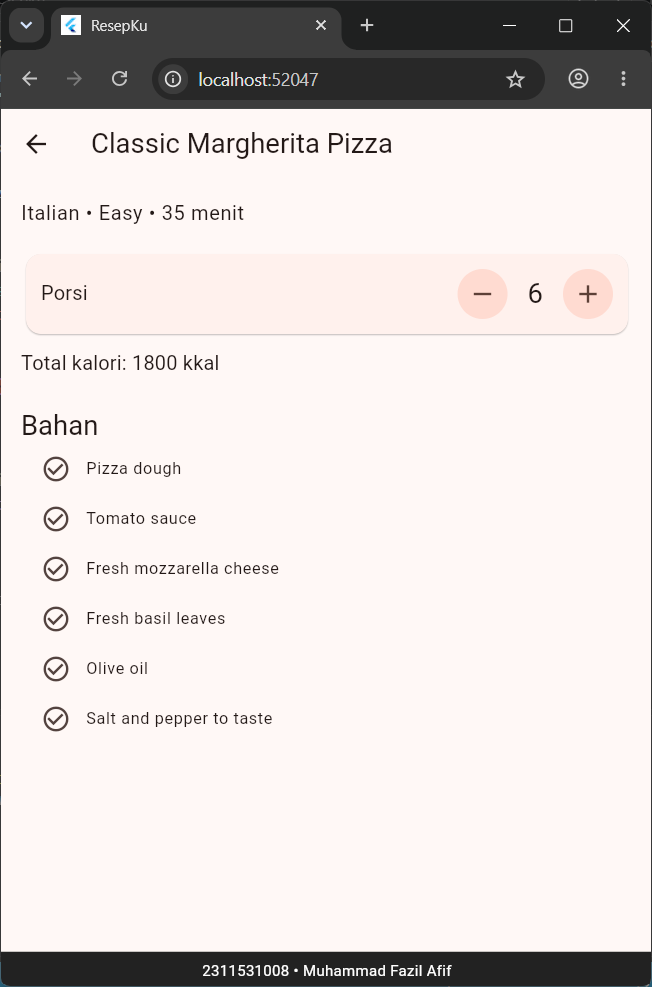
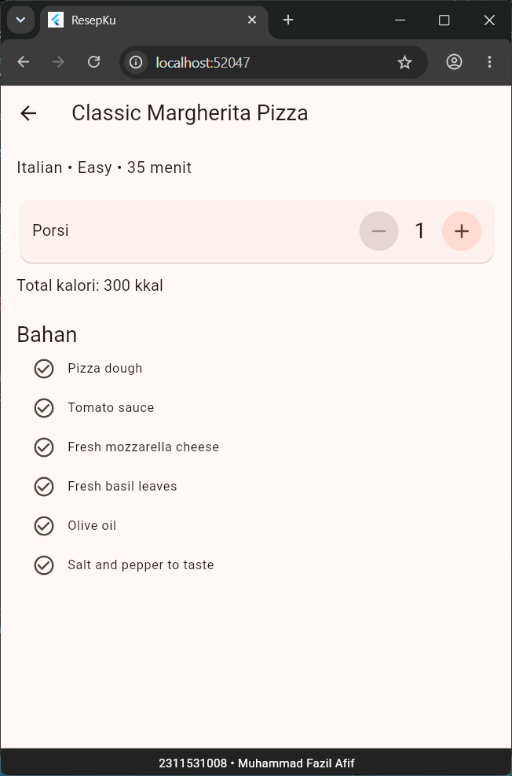
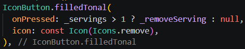
Sebelum memakai Provider, dicoba cara paling sederhana terlebih dahulu: RecipeTile diubah menjadi StatefulWidget dan menyimpan status favoritnya sendiri pada variabel bool _isFavorite = false. Ikon hati pada trailing berganti antara Icons.favorite (merah) dan Icons.favorite_border, dan nilainya dibalik di dalam setState() ketika ditekan.
class _RecipeTileState extends State<RecipeTile> {
bool _isFavorite = false;
@override
Widget build(BuildContext context) {
final recipe = widget.recipe;
return ListTile(
// ...
trailing: IconButton(
icon: Icon(
_isFavorite ? Icons.favorite : Icons.favorite_border,
color: _isFavorite ? Colors.red : null,
),
onPressed: () => setState(() => _isFavorite = !_isFavorite),
),
// ...
);
}
}Hasil pengamatan eksperimen ini dijawab pada bagian Pertanyaan Analisis nomor 1. Kesimpulannya, data favorit dibutuhkan di banyak tempat (daftar resep, badge, halaman detail, dan halaman Favorit), sedangkan data yang disimpan di dalam setiap tile tidak dapat dibaca widget lain. Oleh karena itu data harus dipindahkan ke atas menggunakan Provider.
Package dipasang dengan perintah flutter pub add provider yang menambahkan provider ke pubspec.yaml sekaligus mengunduhnya. Kemudian dibuat class FavoriteProvider yang extends ChangeNotifier sebagai tempat state global favorit.
import 'package:flutter/foundation.dart';
import 'package:resepku/models/recipe.dart';
class FavoriteProvider extends ChangeNotifier {
final List<Recipe> _items = [];
// Dari luar hanya boleh dibaca, tidak boleh diubah langsung
List<Recipe> get items => List.unmodifiable(_items);
int get count => _items.length;
bool isFavorite(Recipe recipe) => _items.any((r) => r.id == recipe.id);
void toggle(Recipe recipe) {
if (isFavorite(recipe)) {
_items.removeWhere((r) => r.id == recipe.id);
} else {
_items.add(recipe);
}
notifyListeners(); // beri tahu semua widget yang "mendengarkan"
}
void clear() {
_items.clear();
notifyListeners();
}
}extends ChangeNotifier — Memberi class kemampuan menyimpan daftar listener dan memanggil notifyListeners()._items dan items — _items bersifat private, sedangkan items adalah getter List.unmodifiable, sehingga dari luar data hanya dapat dibaca dan setiap perubahan wajib melalui toggle() atau clear().isFavorite() — Memeriksa apakah resep ada di daftar dengan membandingkan id, bukan objeknya, karena pada modul berikutnya objek Recipe akan dibuat ulang dari JSON.toggle() — Menambahkan resep jika belum favorit atau menghapusnya jika sudah, lalu memanggil notifyListeners() untuk memberi tahu semua widget yang mendengarkan.ChangeNotifierProvider dipasang di atas MaterialApp pada main() agar seluruh halaman (route) dapat mengakses FavoriteProvider. MultiProvider digunakan agar provider lain mudah ditambahkan di kemudian hari, seperti pada Latihan 1. Baris builder untuk footer identitas tetap dipertahankan. Setelah mengubah main.dart wajib dilakukan hot restart, bukan hot reload, karena hot reload tidak menjalankan ulang main() sehingga provider belum terpasang dan muncul ProviderNotFoundException.
void main() {
runApp(
MultiProvider(
providers: [
ChangeNotifierProvider(create: (context) => FavoriteProvider()),
],
child: const ResepKuApp(),
),
);
}
class ResepKuApp extends StatelessWidget {
const ResepKuApp({super.key});
@override
Widget build(BuildContext context) {
return MaterialApp(
title: 'ResepKu',
debugShowCheckedModeBanner: false,
theme: ThemeData(colorSchemeSeed: Colors.deepOrange),
builder: (context, child) => IdentityFooter(child: child!), // tetap dipertahankan
home: const HomePage(),
);
}
}RecipeTile dikembalikan menjadi StatelessWidget karena data favorit tidak lagi disimpan di tile. Pada build() digunakan context.watch<FavoriteProvider>().isFavorite(recipe) agar widget ikut rebuild ketika daftar favorit berubah. Pada callback onPressed digunakan context.read<FavoriteProvider>().toggle(recipe) karena di dalam callback cukup memanggil method tanpa perlu mendengarkan perubahan.
class RecipeTile extends StatelessWidget {
const RecipeTile({super.key, required this.recipe});
final Recipe recipe;
@override
Widget build(BuildContext context) {
// watch: widget ini ikut rebuild saat daftar favorit berubah
final isFavorite = context.watch<FavoriteProvider>().isFavorite(recipe);
return ListTile(
// ...
trailing: IconButton(
icon: Icon(
isFavorite ? Icons.favorite : Icons.favorite_border,
color: isFavorite ? Colors.red : null,
),
// read: di dalam callback cukup "membaca", tidak perlu listen
onPressed: () => context.read<FavoriteProvider>().toggle(recipe),
),
// ...
);
}
}Pada detail_page.dart ditambahkan import provider dan favorite_provider, satu baris context.watch setelah totalCalories, serta parameter actions pada AppBar berisi ikon hati. Halaman ini sekarang memakai dua jenis state sekaligus: _servings sebagai state lokal (setState) dan favorit sebagai state global (Provider).
final isFavorite = context.watch<FavoriteProvider>().isFavorite(recipe);
appBar: AppBar(
title: Text(recipe.name),
actions: [
IconButton(
icon: Icon(isFavorite ? Icons.favorite : Icons.favorite_border),
onPressed: () => context.read<FavoriteProvider>().toggle(recipe),
),
],
),FavoritePage menggunakan Consumer<FavoriteProvider>, yaitu bentuk widget dari context.watch, di mana fungsi builder dijalankan ulang setiap kali notifyListeners() dipanggil. Apabila favorite.count == 0 ditampilkan pesan "Belum ada resep favorit", sedangkan jika ada isi ditampilkan ListView berisi resep favorit dengan tombol hapus pada trailing yang memanggil favorite.toggle(recipe).
class FavoritePage extends StatelessWidget {
const FavoritePage({super.key});
@override
Widget build(BuildContext context) {
return Scaffold(
appBar: AppBar(title: const Text('Favorit Saya')),
body: Consumer<FavoriteProvider>(
builder: (context, favorite, child) {
if (favorite.count == 0) {
return const Center(
child: Text(
'Belum ada resep favorit.\nTekan ikon hati di daftar resep.',
textAlign: TextAlign.center,
),
);
}
return ListView(
children: [
for (final recipe in favorite.items)
ListTile(
title: Text(recipe.name),
subtitle: Text(recipe.cuisine),
trailing: IconButton(
icon: const Icon(Icons.delete_outline),
onPressed: () => favorite.toggle(recipe),
),
),
],
);
},
),
);
}
}Widget FavoriteBadgeButton dibuat terpisah agar hanya bagian ini yang rebuild ketika jumlah favorit berubah. Widget Badge dari Material 3 menampilkan angka jumlah favorit di atas ikon hati dan disembunyikan dengan isLabelVisible: count > 0 ketika jumlahnya nol. Saat ditekan, tombol ini membuka FavoritePage menggunakan Navigator.push.
class FavoriteBadgeButton extends StatelessWidget {
const FavoriteBadgeButton({super.key});
@override
Widget build(BuildContext context) {
final count = context.watch<FavoriteProvider>().count;
return IconButton(
tooltip: 'Favorit saya',
icon: Badge(
isLabelVisible: count > 0,
label: Text('$count'),
child: const Icon(Icons.favorite),
),
onPressed: () => Navigator.push(
context,
MaterialPageRoute(builder: (context) => const FavoritePage()),
),
);
}
}Widget tersebut dipasang pada actions di AppBar milik HomePage.
appBar: AppBar(
title: const Text('ResepKu'),
actions: const [FavoriteBadgeButton()],
),Setelah hot restart, aplikasi diuji menggunakan enam skenario pada Langkah C.7. Footer NIM dan nama terlihat pada setiap screenshot.
Screenshot Home dengan badge bernilai 2, halaman Detail dengan ikon hati terisi, dan halaman Favorit.
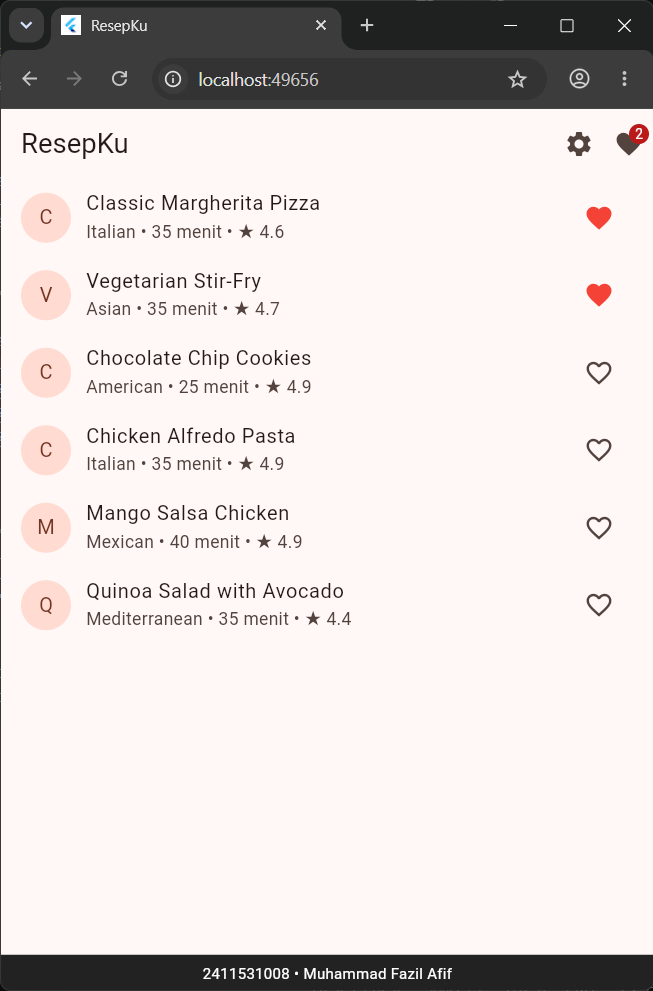
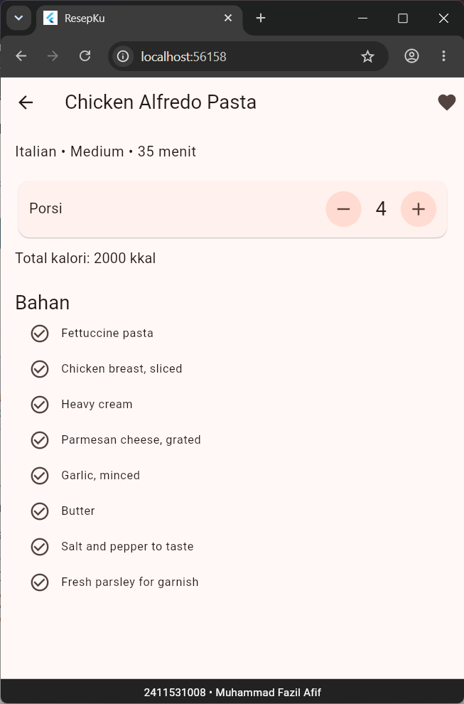
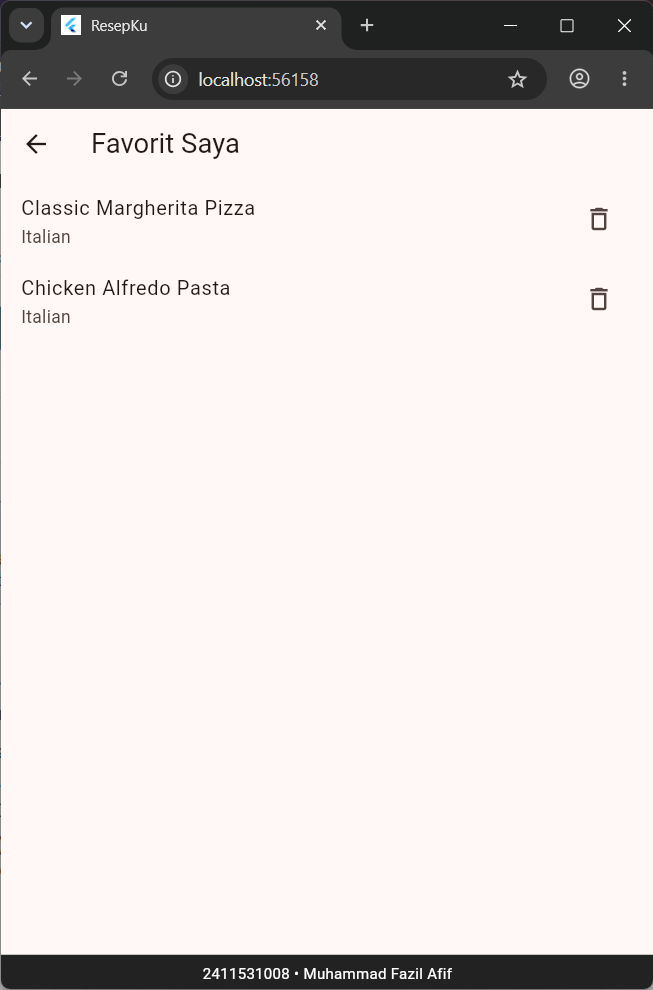
| No | Skenario | Hasil yang Diharapkan | Sesuai? |
|---|---|---|---|
| 1 | Tap ikon hati pada Margherita dan Alfredo di Home | Ikon berwarna merah, badge menunjukkan angka 2 | ✓ |
| 2 | Buka detail Margherita | Ikon hati di AppBar terisi | ✓ |
| 3 | Di halaman detail, tap ikon hati, lalu kembali ke Home | Ikon Margherita kosong, badge menunjukkan angka 1 | ✓ |
| 4 | Tap badge di AppBar | Halaman Favorit hanya berisi Alfredo | ✓ |
| 5 | Hapus Alfredo dari halaman Favorit, lalu kembali | Muncul pesan "Belum ada resep favorit", badge hilang | ✓ |
| 6 | Ubah porsi menjadi 2, kembali ke Home, lalu buka lagi resep yang sama | Porsi kembali ke nilai awal, karena state lokal ikut dibuang ketika halaman ditutup | ✓ |
a. Apakah ikon hati berubah? Mengapa? Ya, ikon hati berubah. Variabel _isFavorite berada di dalam _RecipeTileState, dan ketika ikon ditekan nilainya dibalik di dalam setState(). Pemanggilan setState() membuat Flutter menjalankan ulang build() milik tile tersebut sehingga ikon berganti antara favorite_border dan favorite berwarna merah.
b. Dapatkah jumlah resep favorit ditampilkan di judul AppBar HomePage? Tidak dapat. Data _isFavorite berada di dalam class _RecipeTileState milik masing-masing tile dan bersifat private, sehingga tersimpan terpisah di setiap tile. HomePage hanya membuat RecipeTile dan tidak memiliki cara untuk membaca atau menghitung nilai state milik widget anaknya, sehingga jumlah favorit tidak dapat diketahui.
c. Bagaimana halaman detail mengetahui bahwa resep tersebut favorit? Halaman detail tidak dapat mengetahuinya. DetailPage hanya menerima objek recipe melalui constructor, sedangkan status favorit tersimpan di state milik tile pada halaman lain. Tidak ada jalur bagi data tersebut untuk sampai ke DetailPage kecuali dikirim manual, dan itu pun hanya berupa salinan sehingga perubahan di detail tidak akan memperbarui tile.
Jumlah porsi hanya dibutuhkan oleh satu halaman, yaitu DetailPage, sehingga tergolong state lokal yang cukup disimpan sebagai field di class State. Memasukkannya ke Provider tidak diperlukan dan justru membuat data yang hanya relevan untuk satu halaman menjadi tersimpan secara global. Hal ini sesuai hasil skenario 6 pada Langkah C.7, di mana porsi kembali ke nilai awal ketika halaman ditutup lalu dibuka lagi karena state lokal ikut dibuang bersama halamannya. Perilaku tersebut memang diinginkan, sedangkan data favorit harus tetap bertahan ketika berpindah halaman sehingga cocok disimpan di Provider.
Ketika ChangeNotifierProvider dipindahkan dari main() ke dalam HomePage (membungkus Scaffold), halaman Favorit gagal dibuka dan muncul error ProviderNotFoundException karena FavoritePage tidak dapat menemukan FavoriteProvider. Penyebabnya adalah posisi provider di widget tree: provider hanya dapat diakses oleh widget yang berada di bawahnya (keturunannya). Halaman yang dibuka dengan Navigator.push ditempatkan sebagai route baru di dalam Navigator milik MaterialApp, sejajar dengan HomePage dan bukan sebagai anak dari HomePage. Dengan demikian FavoritePage (begitu juga DetailPage) berada di luar cakupan provider. Oleh karena itu provider harus dipasang di atas MaterialApp. Setelah percobaan, kode dikembalikan seperti semula.
Latihan ini menambahkan halaman Pengaturan berisi SwitchListTile "Mode gelap" yang mengubah tema seluruh aplikasi.
Dibuat class ThemeProvider yang extends ChangeNotifier dengan field ThemeMode _themeMode bernilai awal ThemeMode.light, getter themeMode dan isDark, serta method setDarkMode(bool value) untuk mengubah mode. Method ini memanggil notifyListeners() setelah mengubah nilai agar widget yang mendengarkan ikut diperbarui.
import 'package:flutter/material.dart';
class ThemeProvider extends ChangeNotifier {
ThemeMode _themeMode = ThemeMode.light;
ThemeMode get themeMode => _themeMode;
bool get isDark => _themeMode == ThemeMode.dark;
void setDarkMode(bool value) {
_themeMode = value ? ThemeMode.dark : ThemeMode.light;
notifyListeners();
}
}ThemeProvider didaftarkan sebagai provider kedua di dalam MultiProvider. Pada MaterialApp ditambahkan darkTheme dengan brightness: Brightness.dark dan themeMode yang dibaca dari ThemeProvider. Pembacaan menggunakan context.watch, bukan context.read, karena MaterialApp harus rebuild setiap mode tema berubah; dengan read nilainya hanya dibaca sekali sehingga tema tidak berganti. Baris builder untuk footer identitas tidak dihapus.
import 'package:flutter/material.dart';
import 'package:provider/provider.dart';
import 'package:resepku/pages/home_page.dart';
import 'package:resepku/providers/favorite_provider.dart';
import 'package:resepku/providers/theme_provider.dart';
import 'package:resepku/widgets/identity_footer.dart';
void main() {
runApp(
MultiProvider(
providers: [
ChangeNotifierProvider(create: (context) => FavoriteProvider()),
ChangeNotifierProvider(create: (context) => ThemeProvider()),
],
child: const ResepKuApp(),
),
);
}
class ResepKuApp extends StatelessWidget {
const ResepKuApp({super.key});
@override
Widget build(BuildContext context) {
// watch: MaterialApp harus rebuild saat mode tema berubah
final themeMode = context.watch<ThemeProvider>().themeMode;
return MaterialApp(
title: 'ResepKu',
debugShowCheckedModeBanner: false,
theme: ThemeData(colorSchemeSeed: Colors.deepOrange),
darkTheme: ThemeData(
colorSchemeSeed: Colors.deepOrange,
brightness: Brightness.dark,
),
themeMode: themeMode,
builder: (context, child) => IdentityFooter(child: child!), // jangan dihapus
home: const HomePage(),
);
}
}SettingsPage berisi SwitchListTile dengan value dari theme.isDark (dibaca dengan watch agar tampilan switch selalu sesuai), dan onChanged yang memanggil setDarkMode(value) menggunakan read karena berada di dalam callback. Pada AppBar milik HomePage ditambahkan IconButton berikon Icons.settings yang membuka halaman Pengaturan melalui Navigator.push, diletakkan sebelum FavoriteBadgeButton.
import 'package:flutter/material.dart';
import 'package:provider/provider.dart';
import 'package:resepku/providers/theme_provider.dart';
class SettingsPage extends StatelessWidget {
const SettingsPage({super.key});
@override
Widget build(BuildContext context) {
final theme = context.watch<ThemeProvider>();
return Scaffold(
appBar: AppBar(title: const Text('Pengaturan')),
body: ListView(
children: [
SwitchListTile(
secondary: const Icon(Icons.dark_mode),
title: const Text('Mode gelap'),
subtitle: const Text('Ubah tampilan seluruh aplikasi'),
value: theme.isDark,
onChanged: (value) => context.read<ThemeProvider>().setDarkMode(value),
),
],
),
);
}
}import 'package:resepku/pages/settings_page.dart';
// ...
appBar: AppBar(
title: const Text('ResepKu'),
actions: [
IconButton(
tooltip: 'Pengaturan',
icon: const Icon(Icons.settings),
onPressed: () => Navigator.push(
context,
MaterialPageRoute(builder: (context) => const SettingsPage()),
),
),
const FavoriteBadgeButton(),
],
),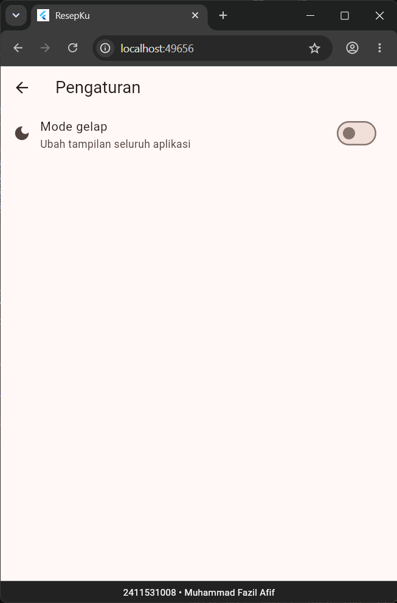
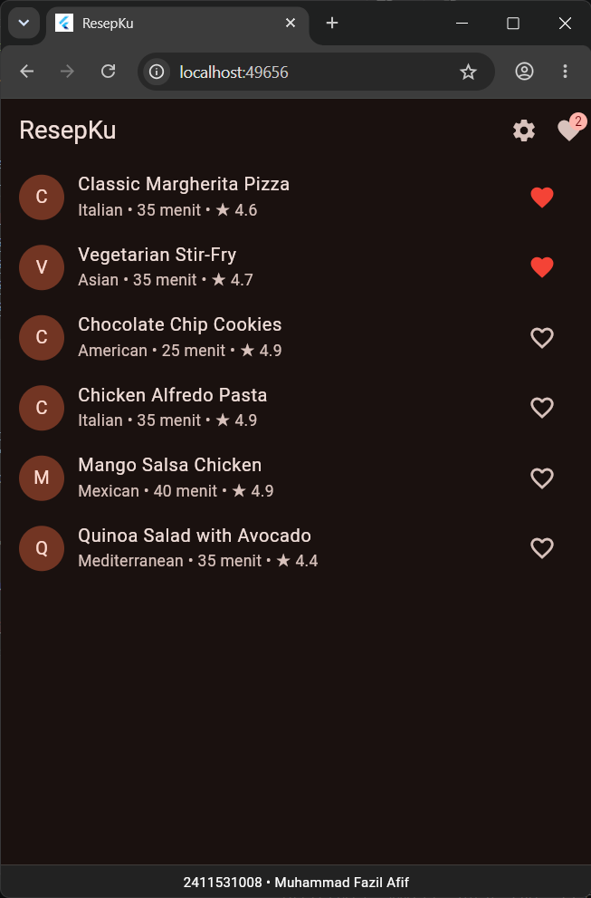
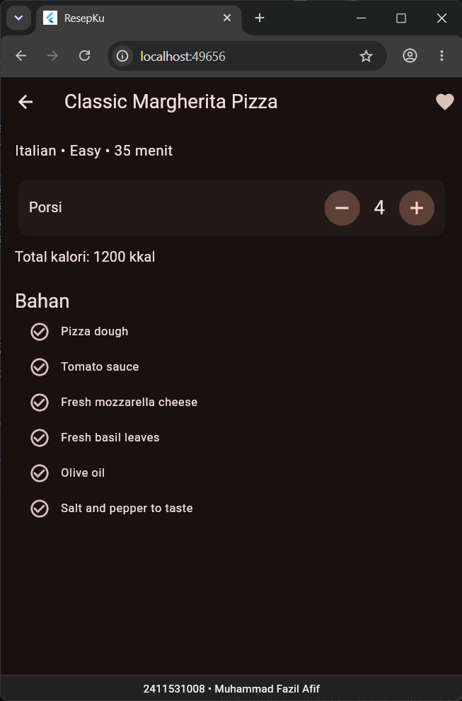
Latihan ini menambahkan tombol "Hapus semua" pada AppBar halaman Favorit yang memanggil clear() dari FavoriteProvider setelah pengguna mengonfirmasi melalui AlertDialog, dan tombol harus nonaktif ketika daftar favorit kosong.
Pada actions di AppBar ditambahkan IconButton berikon Icons.delete_sweep yang dibungkus Consumer<FavoriteProvider> agar status tombol ikut berubah ketika daftar berubah. Properti onPressed diisi favorite.count == 0 ? null : () => _confirmClearAll(context), sehingga tombol otomatis nonaktif ketika tidak ada favorit.
appBar: AppBar(
title: const Text('Favorit Saya'),
actions: [
Consumer<FavoriteProvider>(
builder: (context, favorite, child) {
return IconButton(
tooltip: 'Hapus semua',
icon: const Icon(Icons.delete_sweep),
// null = tombol nonaktif saat daftar favorit kosong
onPressed: favorite.count == 0
? null
: () => _confirmClearAll(context),
);
},
),
],
),Method _confirmClearAll menampilkan AlertDialog melalui showDialog<bool> berisi tombol "Batal" yang menutup dialog dengan nilai false dan tombol "Hapus" yang menutup dialog dengan nilai true menggunakan Navigator.pop. Nilai hasil dialog ditampung di variabel confirmed. Hanya jika confirmed == true dan context.mounted bernilai true, dipanggil context.read<FavoriteProvider>().clear() untuk menghapus seluruh favorit. Pengecekan context.mounted diperlukan karena dialog bersifat asynchronous dan halaman bisa saja sudah tertutup saat dialog selesai.
import 'package:flutter/material.dart';
import 'package:provider/provider.dart';
import 'package:resepku/providers/favorite_provider.dart';
class FavoritePage extends StatelessWidget {
const FavoritePage({super.key});
Future<void> _confirmClearAll(BuildContext context) async {
final confirmed = await showDialog<bool>(
context: context,
builder: (dialogContext) => AlertDialog(
title: const Text('Hapus semua favorit?'),
content: const Text('Semua resep akan dihapus dari daftar favorit.'),
actions: [
TextButton(
onPressed: () => Navigator.pop(dialogContext, false),
child: const Text('Batal'),
),
FilledButton(
onPressed: () => Navigator.pop(dialogContext, true),
child: const Text('Hapus'),
),
],
),
);
if (confirmed == true && context.mounted) {
context.read<FavoriteProvider>().clear();
}
}
@override
Widget build(BuildContext context) {
return Scaffold(
appBar: AppBar(
title: const Text('Favorit Saya'),
actions: [
Consumer<FavoriteProvider>(
builder: (context, favorite, child) {
return IconButton(
tooltip: 'Hapus semua',
icon: const Icon(Icons.delete_sweep),
// null = tombol nonaktif saat daftar favorit kosong
onPressed: favorite.count == 0
? null
: () => _confirmClearAll(context),
);
},
),
],
),
body: Consumer<FavoriteProvider>(
builder: (context, favorite, child) {
if (favorite.count == 0) {
return const Center(
child: Text(
'Belum ada resep favorit.\nTekan ikon hati di daftar resep.',
textAlign: TextAlign.center,
),
);
}
return ListView(
children: [
for (final recipe in favorite.items)
ListTile(
title: Text(recipe.name),
subtitle: Text(recipe.cuisine),
trailing: IconButton(
icon: const Icon(Icons.delete_outline),
onPressed: () => favorite.toggle(recipe),
),
),
],
);
},
),
);
}
}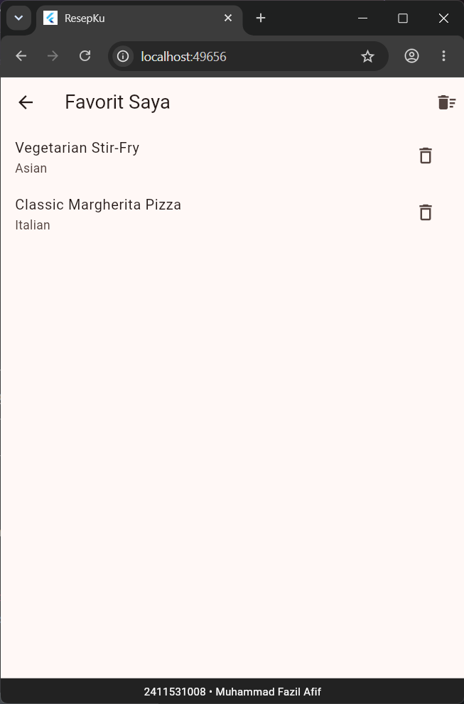
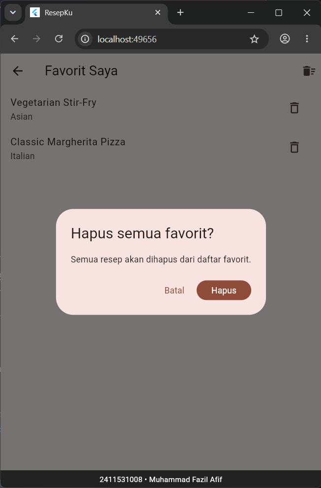
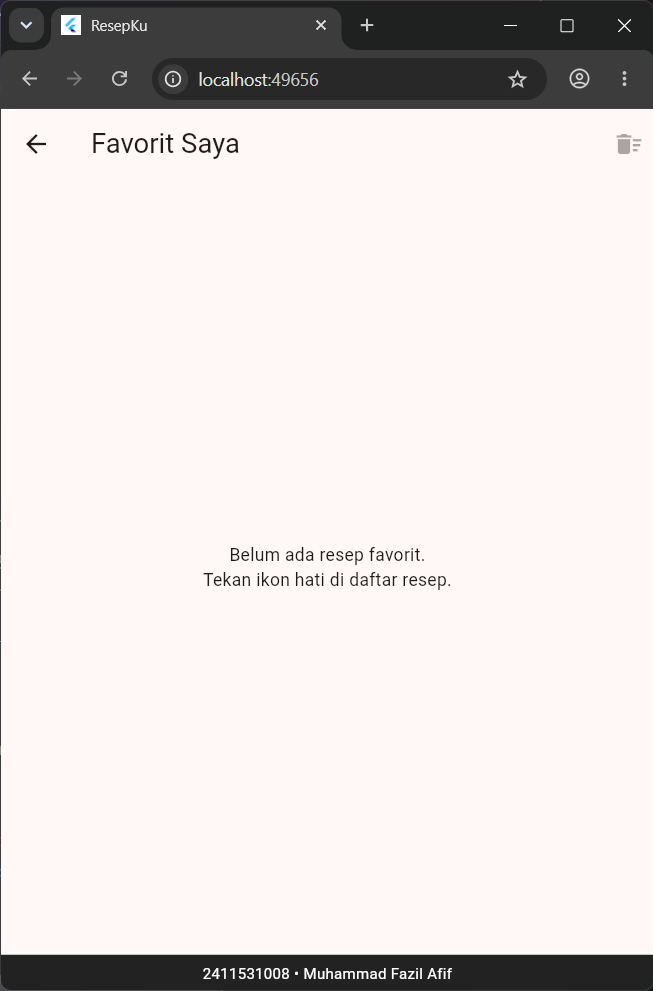
Berdasarkan praktikum yang telah dilakukan, dapat disimpulkan bahwa pemilihan tempat penyimpanan state bergantung pada siapa yang membutuhkan data tersebut. State yang hanya dibutuhkan satu halaman, seperti jumlah porsi, cukup dikelola dengan StatefulWidget dan setState(). Sebaliknya, data yang dibutuhkan banyak widget dan halaman, seperti daftar favorit, tidak dapat disimpan di state lokal dan perlu dipindahkan ke ChangeNotifier yang disediakan melalui Provider di atas MaterialApp.
Pembacaan state menggunakan context.watch atau Consumer di dalam build() agar widget ikut diperbarui, dan context.read di dalam callback untuk memanggil method tanpa mendengarkan perubahan. Penerapan ThemeProvider dan fitur hapus semua favorit menunjukkan bahwa satu aplikasi dapat memiliki beberapa provider sekaligus melalui MultiProvider dan memadukannya dengan state lokal.